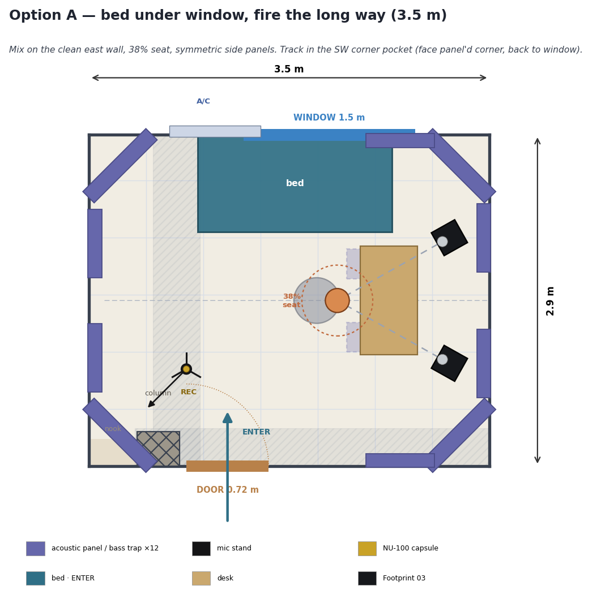
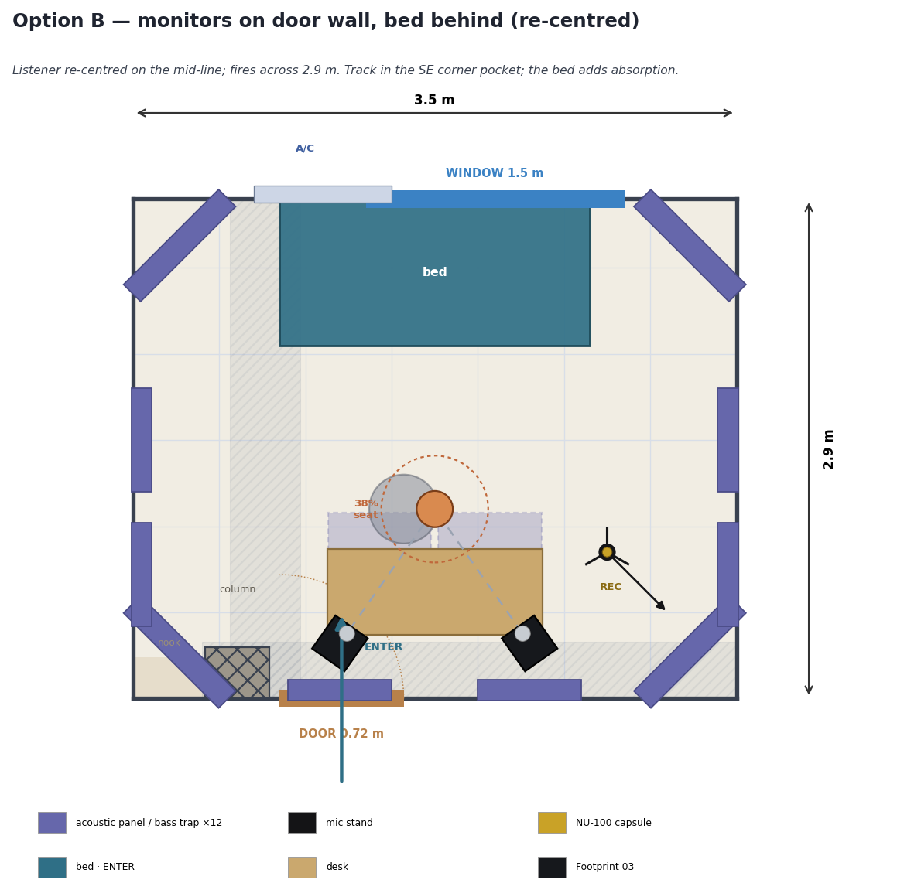
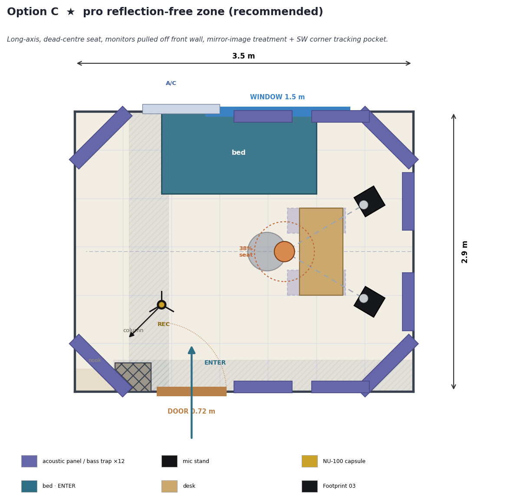
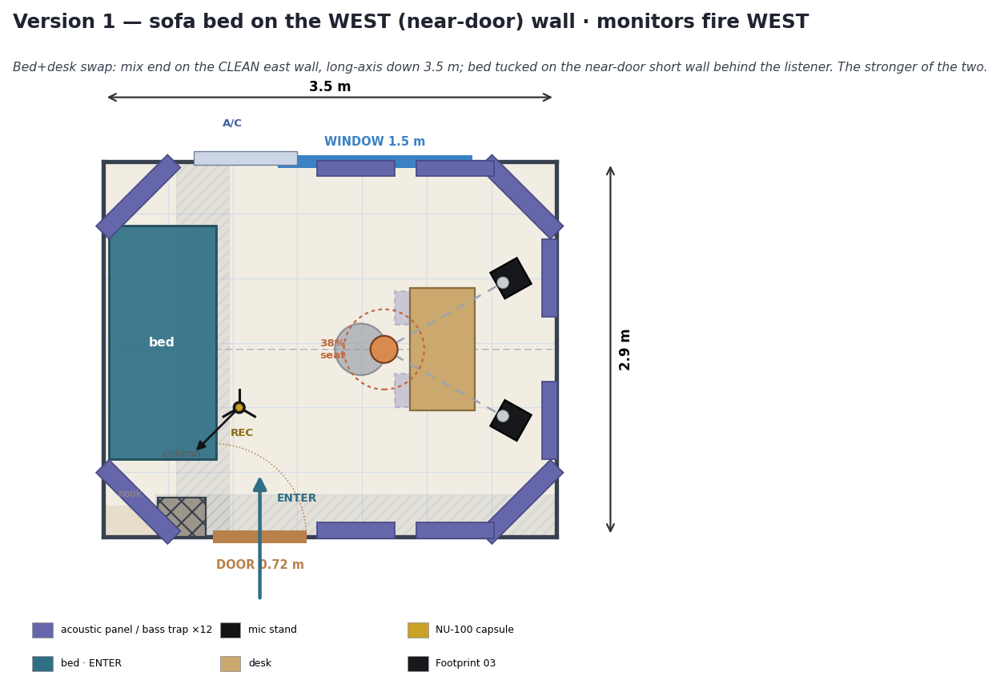
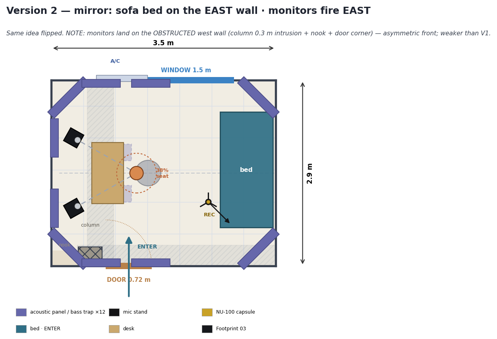

Interactive 3D
立 體 預 覽2D Top-Down Plans
平 面 圖




Acoustics & Tracking
聲 學 ／ 收 音Mixing. All three fire so the listener sits at the 38% point with a left–right symmetric front. Option C is the textbook build: long-axis firing, dead-centre seat, monitors pulled ~45 cm off the front wall, four 45° corner traps, mirror-image first/second-reflection panels, a front-wall pair and a ceiling cloud. The room's one unavoidable compromise is the window on a side wall — treat that mirror point with a real deep absorber, not just a curtain.
Tracking matters as much as mixing here. Each option marks a corner vocal pocket (REC): sing into a corner that carries a panel, with your back or side to the window curtain so the glass can't slap. A ceiling cloud/diffuser goes overhead, a reflection filter + pop filter sit on the NU-100, and the cardioid's rejecting rear faces the open room. The bed doubles as broadband absorption nearby.
Reflection-filter use follows Sound on Sound's tests — a useful supplement, not a cure for the room. Full references below.
References
參 考 資 料- Sound on Sound — Studio SOS Guide to Monitoring & Acoustic Treatment · Mike Senior
- Sound on Sound — Studio window at a mirror point
- Sound on Sound — How much difference does mic position make to vocals?
- Sound on Sound — Is a reflection filter worth the money?
- GIK Acoustics — Placing Room Treatments
- GIK Acoustics — Mounting Bass Traps in Corners
- GIK Acoustics — How to Treat Windows for Sound
- Arqen — Room Setup & Acoustic Treatment 101
- Arqen — How to Build a Reflection-Free Zone
- Arqen — Bass Traps 101: Placement Guide
- Critical Listening Lab — The 38% Rule
- Acoustical Surfaces — First Reflection Points
- Acoustics Insider — Do Windows Hurt Your Studio Acoustics?
- Sonarworks — Recording Vocals at Home
- iZotope — Which Room Should You Record In?